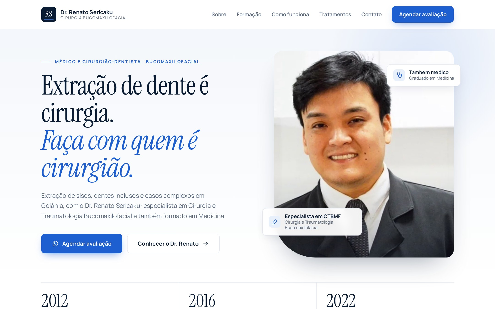

Novo projeto entregue
Site profissional para oDr. Renato Sericaku
Cirurgião Bucomaxilofacial e Médico · Goiânia
Quer um assim? 👇
Toque no link · @euaugusto_oliv
Cirurgião Bucomaxilofacial e Médico · Goiânia

Criado por Gabriel Augusto · @euaugusto_oliv
Quer o seu? Link na bioCirurgião Bucomaxilofacial e Médico · Goiânia
Toque no link · @euaugusto_oliv